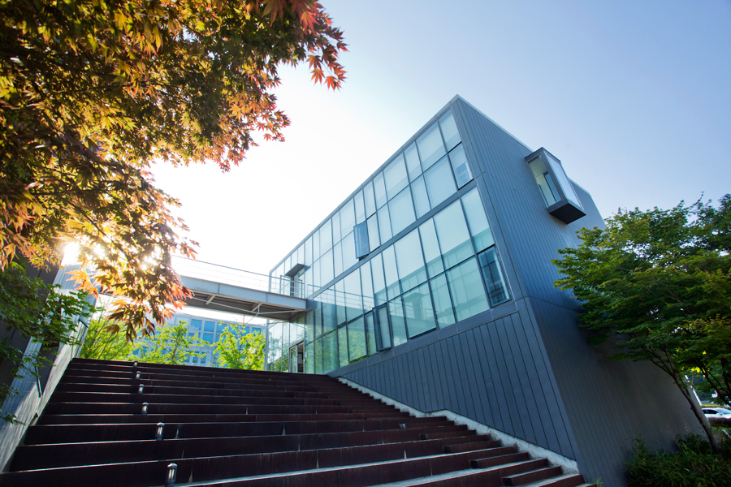

렉처홀

건물소개
맥센터와 함께 2007년 지어진 건물이다. 미니멀리즘을 엿볼 수 있는 건물로서 공연 및 예술 활동을 위한 실습실로 이용되고 있다. 기오헌 민현식의 설계작이다.
설계 기오헌 민현식
시공 두산건설
준공 2005
1F 방송공연예술학과 실습실, 영상실, 탈의실 및 샤워실
2F 건강운동관리학과, 생활체육학과, 생활체육학과 실습실
3F 노인스포츠지도사연구원, 생활체육학과 실습실, 교수연구실